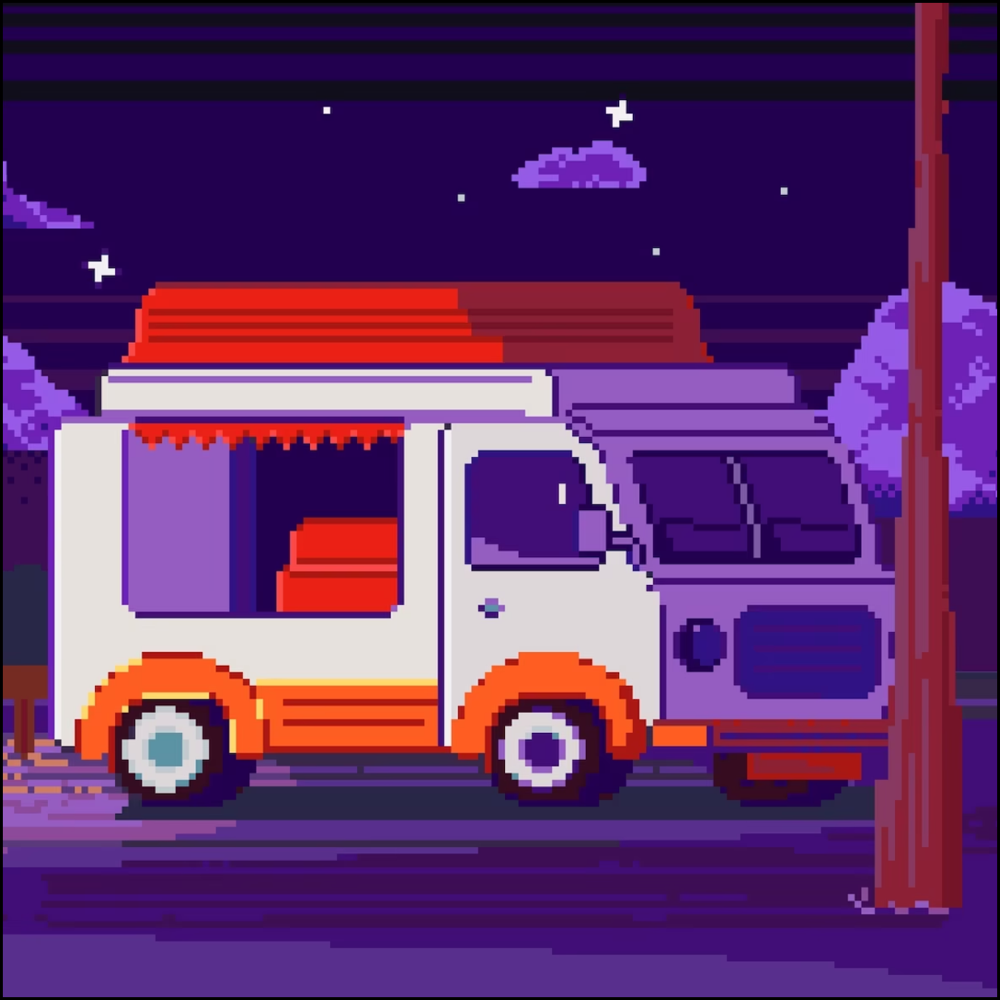

Фритрек и нулевой спринт: Подготовка к работе

</HTML>Это было самое начало пути. Всё казалось новым, непривычным и немного пугающим. Я только знакомилась с редактором кода, GitHub и первыми правилами вёрстки.
Но уже тогда стало понятно: если идти маленькими шагами, даже сложные темы постепенно становятся понятными.